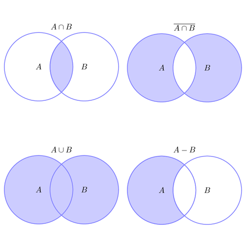

Tylko obiekty Hashowalne mogą być:
- Elementami zbioru (set)
- Kluczami słownika (dict)
Objekty Hashowalne (Hashables)
An object is hashable if it has a hash value which never changes during its lifetime, and [the object] can be compared to other objects.
Co to jest Hash?
Hash == Liczba
Jak sprawdzić czy objekt jest hashowalny?
hash('abc') hash(1) hash(100) hash(10**100) hash([1, 2, 3])
Immutable == Hashable
Objekty niezmienne są hashowalne.
- Nie musi być prawdą dla typów które nie są wbudowane w język tylko zdefiniowane w bibliotekach itp.
Mutable | Immutable |
|---|---|
|
|
Zbiory (set)
class set([iterable])
Co to?
Nieuporządkowana kolekcja unikalnych (hashowalnych) objektów.
Po co?
- Testowanie czy element (objekt) jest w kolekcji
- Usuwanie duplikatów
- Matematyka! (i nie tylko)
- Suma (union) zbiorów
- Iloczyn (część wspólna) (intersection) zbiorów
- Różnica (difference) zbiorów
- Różnica (symetrical difference) symetryczna zbiorów
Zbiory (set) - tworzenie
a = {1, 'k', 2, 'zyx'} b = set([1, 'k', 2, 'zyx']) c = set((1, 'k', 2, 'zyx')) a == b == c # True
d = {'a', 'b', 'c'} e = set('abc') f = set(['a', 'b', 'c']) g = set(('a', 'b', 'c')) d == e == f == g # True
Zbiory (set) - modyfikowanie
a = {1, 'k', 2, 'zyx'} a.add(10) a.remove('k') a.discard(2) a.pop() a.clear()
Zbiory (set) - remove vs. discard
a = {1, 'k', 2, 'zyx'} a.remove('do not exists in a') a.discard('do not exists in a')
Zbiory (set) - ilość elementów
a = {1, 'k', 2, 'zyx'} len(a) # 4
Zbiory (set) - operacje porównania

a, b = {1, 2, 3}, {1, 2, 3} a == b a >= b a <= b a < b a > b
a, b = {1, 2, 3}, {1, 2, 3} a == b # True a >= b # True a <= b # True a < b # False a > b # False
a, b = {1, 2}, {1, 2, 3} a == b a >= b a <= b a < b a > b
a, b = {1, 2}, {1, 2, 3} a == b # False a >= b # False a <= b # True a < b # True a > b # False
a, b = {1, 2}, {3, 4} a == b a >= b a <= b a < b a > b
a, b = {1, 2}, {3, 4} a == b # False a >= b # False a <= b # False a < b # False a > b # False
a = {'a', 'b', 1, 2} 'a' in a 'b' in a 'c' in a 1 in a 2 not in a
a = {'a', 'b', 1, 2} 'a' in a # True 'b' in a # True 'c' in a # False 1 in a # True 2 not in a # False
Zbiory (set) - operacje matematyczne!?
Iloczyn zbiorów (część wspólna)
abc = set('abc') cde = set('cde') abc & cde # {'c'} abc.intersection(cde)
Suma zbiorów
abc = set('abc') cde = set('cde') abc | cde # {'c', 'b', 'e', 'd', 'f', 'a'} abc.union(cde)
Różnica zbiorów
abc = set('abc') cde = set('cde') abc - cde # {'a', 'b'} abc.difference(cde) cde - abc # {'d', 'e'} cde.difference(abc)
Różnica symetryczna zbiorów
abc = set('abc') cde = set('cde') abc ^ cde # {'a', 'b', 'd', 'e'} abc.symmetric_difference(cde) cde ^ abc # {'a', 'b', 'd', 'e'} cde.symmetric_difference(abc)
Pytania?
Zadania!
sets_XX.py